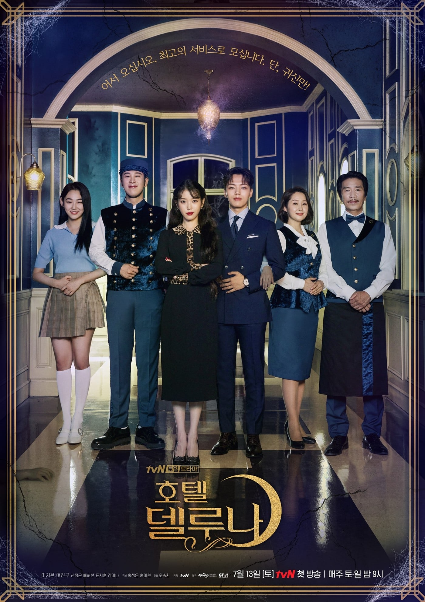
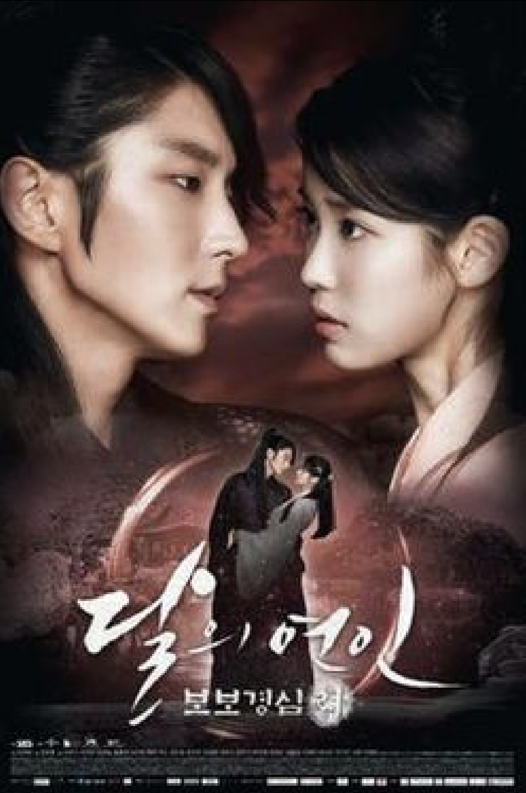

IU
Lee Ji Eun
About
Albums
TV Shows
TV Shows

Hotel Del Luna
Jang Man-Wol (IU) is the CEO of Hotel del Luna.
The hotel is situated in downtown in Seoul and
has a very old appearance. She made a big error
many years ago and, because of this, she has
been stuck at Hotel del Luna. She is beautiful,
but she is fickle, suspicious and greedy.
Koo Chan-Sung (Yeo Jin-Goo) worked as the youngest
assistant manager ever at a multinational hotel
corporation. He is a sincere perfectionist. He
looks level-headed, but he actually has a soft
disposition. Due to an unexpected case, he begins
to work as a manager at Hotel del Luna. The hotel's
clientele consists of ghosts.

Scarlet Heart: Ryeo
Scarlet Heart Ryeo tells the story of twenty-five-year-old
Go Ha-Jin (IU) who is transported back in time to the
Goryeo Dynasty. She then wakes up in the body of Lady
Hae Soo and finds herself amongst the ruling princes
of the Wang Family. However, Hae Soo ends up becoming
romantically involved with some of the princes and finds
herself entangled in a web of politics and the prince’s
fight for the throne.